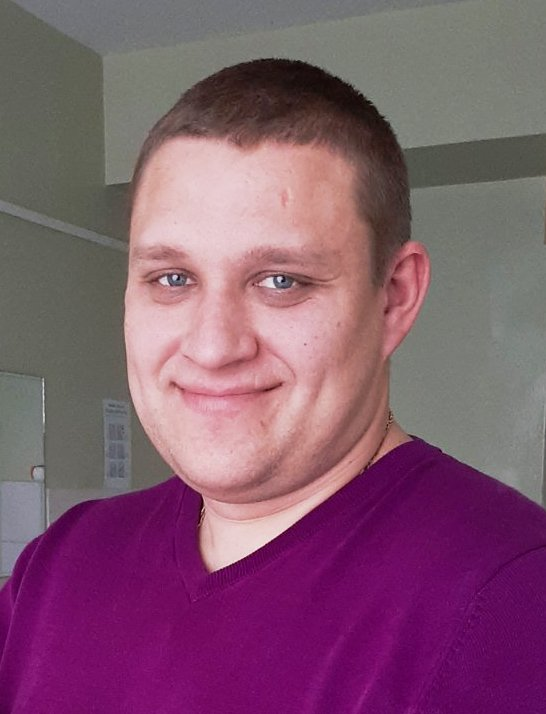

Мазурок Василь Юрійович
Бажана посада в ІТ - Junior frontend developer
Контактні дані:
-
Linkedin
-
GitHub
- Mail: vasok1991@gmail.com
- Phone: +38 097 893 08 54
- Telegram: +380978930854

Наполегливість, стресостійкість, бажання вчитися та удосконалюватися. Вік - 31 рік. Сімейний стан - одружений, двоє дітей. Учасник бойових дій (АТО).
Список технологій програмування, які вивчаю на курсі:
- Git
- HTML
- CSS
- JavaScript
Досвід роботи в IT:
- Навчаюся в "Eleks-Bootcamp"
Освіта - вища юридична.